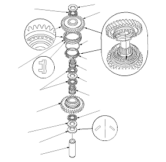

M/T Reverse Idler Gear Shaft Assembly Disassembly/Reassembly
Prior to reassembling, clean all the parts in solvent, dry them, and apply lubricant to any contact surface.

Prior to reassembling, clean all the parts in solvent, dry them, and apply lubricant to any contact surface.